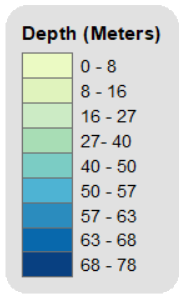

<!doctype html>

<!-- Coded by Matt Caddenhead
	 For NSF Grant #1518532
		-->

<html>
	<head>
		<meta charset="utf-8">
		
		<title>Vertical Oak II</title>
		
		<!-- Stylesheets -->
		<link rel="stylesheet" href="./Leaflet-1.2.0/leaflet.css"/>
		<link rel="stylesheet" href="./src/styles/css.css"/>
		<link rel="stylesheet" href="./src/styles/leaflet-overview.css" />
		<link rel="stylesheet" href="./src/styles/measure_tool.css"/>
				
		<!-- Javascript -->
		<script src="./Leaflet-1.2.0/leaflet.js"></script>
		<script src="./src/js/leaflet-overview.js"></script>
		<script src="./src/js/measure_tool.js"></script>
		<script src="./src/js/bing_js/leaflet-bing-layer.js"></script>
		<script src="https://ajax.googleapis.com/ajax/libs/jquery/1.12.0/jquery.min.js"></script>
		
		<!-- GeoJSON overlays -->
		<script src="./src/overlays/lv_basin3.js"></script>
		<script src="./src/overlays/subrivers.js"></script>
		<script src="./src/overlays/subbasin.js"></script>	
		<script src="./src/overlays/shoreline_line.js"></script>
		<script src="./src/overlays/CountryBoundaries.js"></script>
		<script src="./src/overlays/research_institutions.js"></script>
	
	</head>
		<body>
			<div id="map"></div>
			
			<script>
			
			// Zoom to feature function
			function zoomToFeature(t) {
			  map.fitBounds(t.target.getBounds());
			}
			// tie functions to DOM events like onClick etc.
			function onEachFeature(feature, layer) {
			  layer.on({
			    click: zoomToFeature
			  });
			}
				
////////////////////////////////////////////////////////////////////////////////////////////////////////////////////////
				
			// Call geoJson and styles from js			
			var a = L.geoJson(poly2, {
				style: BasinStyle}),
				
			    
				b = L.geoJson(subrivers, {
				style: Rivers}),
				
			//switch statement to categorically style	
			
				c = L.geoJson(subbasin1, {
				style: subbasinstyle}),
				
				d = L.geoJson(shoreline, {
				style: Shoreline_style}),
				
				//switch statement to categorically style	
				
				e = L.geoJson(countries, {
				style: Country_style,
					onEachFeature: onEachFeature
				}),
				
				//bind popups
				
				f = L.geoJson(institutions, {
					onEachFeature: function (feature, layer){
						popupOptions = {maxWidth: 250};
						layer.bindPopup("<b>Research Instituition:</b> " + feature.properties.Institutio
						,popupOptions);
						}
						})
			
		
			//assigning variables to layers for control	
			var aShp = L.layerGroup([a]),
				
				bShp = L.layerGroup([b]),
				
				cShp = L.layerGroup([c]),
				
				dShp = L.layerGroup([d]),
				
				eShp = L.layerGroup([e]),
				
				fShp = L.layerGroup([f]);
			
////////////////////////////////////////////////////////////////////////////////////////////////////////////////////////
				
			// Set-Up Background images
			var OpenStreetMap_Mapnik = L.tileLayer('https://{s}.tile.openstreetmap.org/{z}/{x}/{y}.png', {	
				name:'osm',
				maxZoom: 19,
				attribution: '&copy; <a href="http://www.openstreetmap.org/copyright">OpenStreetMap</a>'
			});
			var Esri_WorldImagery = L.tileLayer('http://server.arcgisonline.com/ArcGIS/rest/services/World_Imagery/MapServer/tile/{z}/{y}/{x}', {
				name:'imagery',
				attribution: 'Tiles &copy; Esri &mdash; Source: Esri, i-cubed, USDA, USGS, AEX, GeoEye, Getmapping, Aerogrid, IGN, IGP, UPR-EGP, and the GIS User Community'
			});
			var OpenTopoMap = L.tileLayer('https://{s}.tile.opentopomap.org/{z}/{x}/{y}.png', {
				name:'otm',
				maxZoom: 17,
				attribution: 'Map data: &copy; <a href="http://www.openstreetmap.org/copyright">OpenStreetMap</a>, <a href="http://viewfinderpanoramas.org">SRTM</a> | Map style: &copy; <a href="https://opentopomap.org">OpenTopoMap</a> (<a href="https://creativecommons.org/licenses/by-sa/3.0/">CC-BY-SA</a>)'
			});
			var Esri_NatGeoWorldMap = L.tileLayer('https://server.arcgisonline.com/ArcGIS/rest/services/NatGeo_World_Map/MapServer/tile/{z}/{y}/{x}', {
				name:'natgeo',
				attribution: 'Tiles &copy; Esri &mdash; National Geographic, Esri, DeLorme, NAVTEQ, UNEP-WCMC, USGS, NASA, ESA, METI, NRCAN, GEBCO, NOAA, iPC',
				maxZoom: 16
			});
			var Stamen_TonerLite = L.tileLayer('https://stamen-tiles-{s}.a.ssl.fastly.net/toner-lite/{z}/{x}/{y}.{ext}', {
				name:'gray',
				attribution: 'Map tiles by <a href="http://stamen.com">Stamen Design</a>, <a href="http://creativecommons.org/licenses/by/3.0">CC BY 3.0</a> &mdash; Map data &copy; <a href="http://www.openstreetmap.org/copyright">OpenStreetMap</a>',
				subdomains: 'abcd',
				minZoom: 0,
				maxZoom: 20,
				ext: 'png'
			});
			var NASAGIBS_ViirsEarthAtNight2012 = L.tileLayer('https://map1.vis.earthdata.nasa.gov/wmts-webmerc/VIIRS_CityLights_2012/default/{time}/{tilematrixset}{maxZoom}/{z}/{y}/{x}.{format}', {
				name:'night',
				attribution: 'Imagery provided by services from the Global Imagery Browse Services (GIBS), operated by the NASA/GSFC/Earth Science Data and Information System (<a href="https://earthdata.nasa.gov">ESDIS</a>) with funding provided by NASA/HQ.',
				bounds: [[-85.0511287776, -179.999999975], [85.0511287776, 179.999999975]],
				minZoom: 1,
				maxZoom: 8,
				format: 'jpg',
				time: '',
				tilematrixset: 'GoogleMapsCompatible_Level'
			});
			var BING_KEY = 'AgMkVIi-eouMUjzdcqxVdMai9h_buTlJOYqkobbH5nL4it28_abiTPyf174m7enr'
			var bingLayer = L.tileLayer.bing(BING_KEY, {
			maxZoom: 20
			});
			
				
////////////////////////////////////////////////////////////////////////////////////////////////////////////////////////
				
			// Set up Bathymetry png, set bounds
			var imageUrl = './src/images/bathyv6.png',
   				imageBounds = [[-3.1770597, 30.2035915], [0.6622560, 36.2559976]];
			var bathyImage = L.imageOverlay(imageUrl, imageBounds,{
				opacity: 0.9
			});
				
////////////////////////////////////////////////////////////////////////////////////////////////////////////////////////
				
			// Set Map Extent, View, and Default Layers
			var map = L.map('map', {
				layers: [OpenStreetMap_Mapnik, dShp, fShp, bathyImage]
				}).setView([-1.250, 32.930699], 7.5);
				

////////////////////////////////////////////////////////////////////////////////////////////////////////////////////////				
			
			// Add Inset map, Set-Up Background images
			var OpenStreetMap_Mapnik2 = L.tileLayer('https://{s}.tile.openstreetmap.org/{z}/{x}/{y}.png', {	
				name:'osm',
				maxZoom: 19,
				attribution: '&copy; <a href="http://www.openstreetmap.org/copyright">OpenStreetMap</a>'
			});
			var Esri_WorldImagery2 = L.tileLayer('http://server.arcgisonline.com/ArcGIS/rest/services/World_Imagery/MapServer/tile/{z}/{y}/{x}', {
				name:'imagery',
				attribution: 'Tiles &copy; Esri &mdash; Source: Esri, i-cubed, USDA, USGS, AEX, GeoEye, Getmapping, Aerogrid, IGN, IGP, UPR-EGP, and the GIS User Community'
			});
			var OpenTopoMap2 = L.tileLayer('https://{s}.tile.opentopomap.org/{z}/{x}/{y}.png', {
				name:'otm',
				maxZoom: 17,
				attribution: 'Map data: &copy; <a href="http://www.openstreetmap.org/copyright">OpenStreetMap</a>, <a href="http://viewfinderpanoramas.org">SRTM</a> | Map style: &copy; <a href="https://opentopomap.org">OpenTopoMap</a> (<a href="https://creativecommons.org/licenses/by-sa/3.0/">CC-BY-SA</a>)'
			});
			var Esri_NatGeoWorldMap2 = L.tileLayer('https://server.arcgisonline.com/ArcGIS/rest/services/NatGeo_World_Map/MapServer/tile/{z}/{y}/{x}', {
				name:'natgeo',
				attribution: 'Tiles &copy; Esri &mdash; National Geographic, Esri, DeLorme, NAVTEQ, UNEP-WCMC, USGS, NASA, ESA, METI, NRCAN, GEBCO, NOAA, iPC',
				maxZoom: 16
			});
			var Stamen_TonerLite2 = L.tileLayer('https://stamen-tiles-{s}.a.ssl.fastly.net/toner-lite/{z}/{x}/{y}.{ext}', {
				name:'gray',
				attribution: 'Map tiles by <a href="http://stamen.com">Stamen Design</a>, <a href="http://creativecommons.org/licenses/by/3.0">CC BY 3.0</a> &mdash; Map data &copy; <a href="http://www.openstreetmap.org/copyright">OpenStreetMap</a>',
				subdomains: 'abcd',
				minZoom: 0,
				maxZoom: 20,
				ext: 'png'
			});
			var NASAGIBS_ViirsEarthAtNight20122 = L.tileLayer('https://map1.vis.earthdata.nasa.gov/wmts-webmerc/VIIRS_CityLights_2012/default/{time}/{tilematrixset}{maxZoom}/{z}/{y}/{x}.{format}', {
				name:'night',
				attribution: 'Imagery provided by services from the Global Imagery Browse Services (GIBS), operated by the NASA/GSFC/Earth Science Data and Information System (<a href="https://earthdata.nasa.gov">ESDIS</a>) with funding provided by NASA/HQ.',
				bounds: [[-85.0511287776, -179.999999975], [85.0511287776, 179.999999975]],
				minZoom: 1,
				maxZoom: 8,
				format: 'jpg',
				time: '',
				tilematrixset: 'GoogleMapsCompatible_Level'
			});
			
			// Add inset map to map and specify basemaps to show
			L.control.overview([OpenStreetMap_Mapnik2,OpenTopoMap2,Esri_WorldImagery2,Esri_NatGeoWorldMap2,Stamen_TonerLite2,NASAGIBS_ViirsEarthAtNight20122]).addTo(map);

////////////////////////////////////////////////////////////////////////////////////////////////////////////////////////	
				
			// Create basemaps variable to call within the control
			var baseMaps = {
				"Bing Imagery": bingLayer,
				"Esri Imagery": Esri_WorldImagery,
				"Gray Scale":Stamen_TonerLite,
				"Open Street Map": OpenStreetMap_Mapnik,
				"Open Topo Map": OpenTopoMap,
				"Nasa Night View": NASAGIBS_ViirsEarthAtNight2012,
				"National Geographic": Esri_NatGeoWorldMap
			};
			
			
			// Create overlays variable to call within the control. Calls layer groups
			var overLays = {
				"Basin": aShp,
				"Bathymetry":bathyImage,
				"Country Boundaries":eShp,				
				"Partner Research Institutions":fShp,
				"Rivers":bShp,
				"Shoreline":dShp,
				"Sub-basins":cShp			
			};
			
			
			//add control to map
			L.control.layers(baseMaps,overLays,{collapsed:false}).addTo(map);
				
////////////////////////////////////////////////////////////////////////////////////////////////////////////////////////				
			
			//Check this and associated scripts for errors. Displays tool
			var measureControl = new L.Control.Measure(
				{
					position: 'topright',
					primaryLengthUnit: 'meters',
					activeColor: '#ABE67E'
				}
			);
			//measureControl.addTo(map);
				

////////////////////////////////////////////////////////////////////////////////////////////////////////////////////////				
			
			// Set up legend
			var bLegend = L.control({position: 'bottomright'});
			bLegend.onAdd = function (map) {
			var div = L.DomUtil.create('div', 'info legend');
			    div.innerHTML +=
			    '';
			return div;
			};
			// Add this one (only) for now, as the Population layer is on by default
			bLegend.addTo(map);
				
			map.on('overlayremove', function (eventLayer) {
			    // If layer remove = bathyImage remove layer
			    if (eventLayer.name === 'Bathymetry') {
				this.removeControl(bLegend);
			    }
			});	
			map.on('overlayadd', function (eventLayer) {
			    // if layer add = bathyImage add legend
			    if (eventLayer.name === 'Bathymetry') {
				bLegend.addTo(this);
			    }
			});
						
			</script>
			
		</body>
